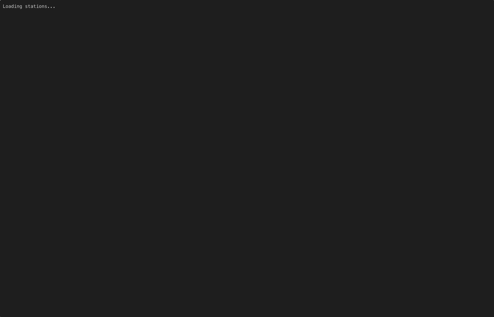

What is rig.fm?
rig.fm is a free, open-source terminal radio player that lets you browse, search, and listen to thousands of internet radio stations without leaving the command line. Powered by the Radio Browser directory, it gives you access to stations from around the world, all wrapped in a beautiful TUI built with Bubble Tea.
Features
Browse worldwide
Access thousands of internet radio stations from around the globe, powered by the Radio Browser directory.
Search and filter
Find stations by genre, country, language, or name. Fuzzy search with autocomplete makes discovery fast.
Multiple themes
Switch between beautiful color themes to match your terminal aesthetic. From classic to neon.
Keyboard-driven
Navigate, play, pause, adjust volume, and manage favorites without ever touching the mouse.
Favorites
Save your go-to stations for quick access. Your favorites persist across sessions.
Now playing
See what's playing with live metadata: song title, genre, codec, bitrate, and a visual waveform.
See it in action
Search and play
Themes

Favourites
Installation
Requires mpv for audio playback. Homebrew installs it automatically.
Homebrew (macOS and Linux)
brew install mwhyte/tap/rig
Go install
go install github.com/mrwhyte/rig/cmd/rig@latest
Requires Go 1.25 or later
Download binary
Grab the latest release for your platform from the releases page.